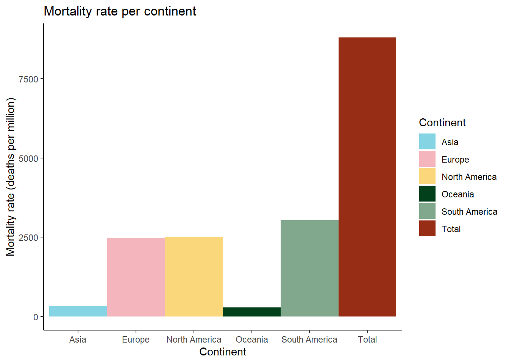
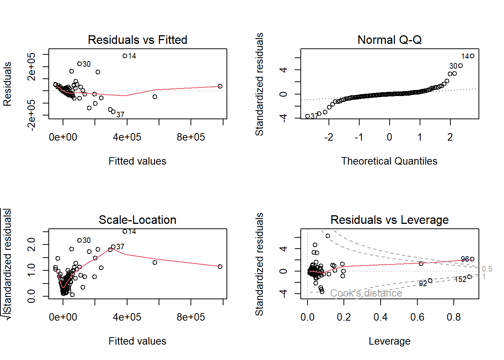
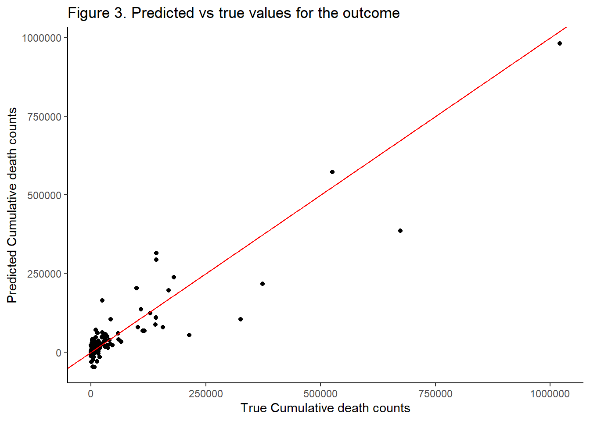
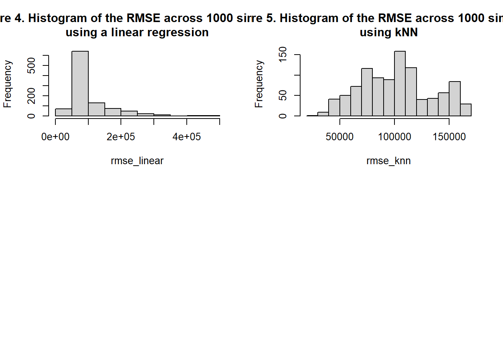

library(rvest)
library(readr)
library(tidyverse)
library(caret)
library(FNN)
library(wesanderson)
library(knitr)
library(kableExtra)
library(owidR)
library(RCurl)html_covid_rates <- read_html("https://www.statista.com/statistics/1104709/coronavirus-deaths-worldwide-per-million-inhabitants/")
tab_covid_rates_raw <- (html_covid_rates |> html_nodes("table"))[[1]] |> html_table()
df_covid_rates <- tab_covid_rates_raw |>
mutate(Total_cases= as.numeric(gsub(",", "", `Confirmed cases (absolute)`)),
Total_deaths=as.numeric(gsub(",", "", `Confirmed deaths (absolute)`)),
Pop_millions= as.numeric(gsub(",", "", `Population (in millions)`)),
Country=Characteristic) |>
select(Country, Total_cases, Total_deaths, Pop_millions)
df_covid_rates## # A tibble: 154 × 4
## Country Total_cases Total_deaths Pop_millions
## <chr> <dbl> <dbl> <dbl>
## 1 Peru 3691213 213714 33.0
## 2 Bulgaria 1180636 37279 6.93
## 3 Bosnia and Herzegovina 379982 15810 3.28
## 4 Hungary 1932788 46661 9.75
## 5 Georgia 1662299 16844 3.71
## 6 North Macedonia 316729 9337 2.07
## 7 Moldova 521182 11570 2.62
## 8 Croatia 1160253 16124 4.05
## 9 Czechia 3943792 40334 10.7
## 10 Slovakia 2559088 20163 5.46
## # … with 144 more rowsurl <- getURL("https://covid.ourworldindata.org/data/owid-covid-data.csv")
tab_vax_rates_raw <- read.csv(text = url)
df_vax_rates <- tab_vax_rates_raw |>
select(location, date, people_fully_vaccinated, continent) |>
filter(!is.na(people_fully_vaccinated)) |>
group_by(location, continent) |>
summarise(fully_vax_count= max(people_fully_vaccinated)) |>
rename(Country =location, Continent=continent)
df_vax_rates## # A tibble: 235 × 3
## # Groups: Country [235]
## Country Continent fully_vax_count
## <chr> <chr> <dbl>
## 1 Afghanistan "Asia" 10615628
## 2 Africa "" 373098255
## 3 Albania "Europe" 1269112
## 4 Algeria "Africa" 6481186
## 5 Andorra "Europe" 53485
## 6 Angola "Africa" 8193976
## 7 Anguilla "North America" 10373
## 8 Antigua and Barbuda "North America" 62384
## 9 Argentina "South America" 37889928
## 10 Armenia "Asia" 985807
## # … with 225 more rowshtml_above_65 <- read_html("https://en.wikipedia.org/wiki/List_of_countries_by_age_structure")
tab_above_65_raw <- html_table(html_node(html_above_65, ".wikitable"), fill = T)
colnames(tab_above_65_raw) <- tab_above_65_raw[1, ]
df_above_65<- tab_above_65_raw[-c(1,2),] |>
select(Country, `Over 65`) |>
rename(Percent_Over_65 =`Over 65`) |>
mutate(Percent_Over_65= parse_number(Percent_Over_65))
df_above_65## # A tibble: 190 × 2
## Country Percent_Over_65
## <chr> <dbl>
## 1 Albania 13.0
## 2 Algeria 6.17
## 3 Angola 2.3
## 4 Antigua and Barbuda 8.91
## 5 Argentina 12.1
## 6 Armenia 12.6
## 7 Aruba (Netherlands) 15.0
## 8 Australia 15.9
## 9 Austria 19.9
## 10 Azerbaijan 7.29
## # … with 180 more rowshtml_pop_density <- read_html("https://en.wikipedia.org/wiki/List_of_countries_and_dependencies_by_population_density")
tab_pop_density_raw <- html_table(html_node(html_pop_density, ".wikitable"), fill = T)
colnames(tab_pop_density_raw) <- tab_pop_density_raw[1, ]
df_pop_density <- tab_pop_density_raw[-1,] |>
select(`Country, territory or dependency`, `/km2`) |>
rename(Country =`Country, territory or dependency`, km2 = `/km2`) |>
mutate(km2= as.numeric(gsub(",", "", km2)))
df_pop_density## # A tibble: 250 × 2
## Country km2
## <chr> <dbl>
## 1 Macau 20806
## 2 Monaco 18343
## 3 Singapore 7617
## 4 Hong Kong 6789
## 5 Gibraltar (BOT) 5445
## 6 Bahrain 1864
## 7 Maldives 1738
## 8 Malta 1667
## 9 Sint Maarten (Netherlands) 1295
## 10 Bermuda (BOT) 1211
## # … with 240 more rowshtml_GDP_per_capita <- read_html("https://en.wikipedia.org/wiki/List_of_countries_by_GDP_(nominal)_per_capita")
tab_GDP_per_capita_raw <- html_table(html_node(html_GDP_per_capita, ".wikitable"), fill = T)
colnames(tab_GDP_per_capita_raw) <- tab_GDP_per_capita_raw[1, ]
df_GDP_per_capita <- (tab_GDP_per_capita_raw[-1,] |>
select(`Country/Territory`, 5) |>
rename(Country=`Country/Territory`, GDP_per_capita = Estimate)|>
mutate(GDP_per_capita= as.numeric(gsub(",", "", GDP_per_capita)),
Country= str_trim(gsub("\\*", "", Country) ) ))[-1,]
df_GDP_per_capita## # A tibble: 223 × 2
## Country GDP_per_capita
## <chr> <dbl>
## 1 Liechtenstein 169049
## 2 Monaco 173688
## 3 Luxembourg 135683
## 4 Bermuda 110870
## 5 Ireland 99152
## 6 Norway 89203
## 7 Switzerland 93457
## 8 Isle of Man 86482
## 9 Cayman Islands 85347
## 10 Qatar 61276
## # … with 213 more rowshtml_obesity_rates <- read_html("https://en.wikipedia.org/wiki/List_of_sovereign_states_by_obesity_rate")
tab_obesity_rates_raw <- html_table(html_node(html_obesity_rates, ".wikitable"), fill = T)
df_obesity_rates <- tab_obesity_rates_raw |>
rename(Obesity_rate=`Obesity rate (%)`)
df_obesity_rates## # A tibble: 191 × 2
## Country Obesity_rate
## <chr> <dbl>
## 1 United States 36.2
## 2 Cook Islands 55.9
## 3 Palau 55.3
## 4 Marshall Islands 52.9
## 5 Tuvalu 51.6
## 6 Niue 50
## 7 Tonga 48.2
## 8 Samoa 47.3
## 9 Kiribati 46
## 10 Federated States of Micronesia 45.8
## # … with 181 more rowstab_CVD_rate_raw <- owid("cardiovascular-disease-death-rates")
df_CVD_rate <- tab_CVD_rate_raw |>
rename(Country =entity, cvd_death_rate="Deaths - Cardiovascular diseases - Sex: Both - Age: Age-standardized (Rate)") |>
group_by(Country) |>
filter(year==max(year), !is.na(cvd_death_rate)) |>
select(Country, cvd_death_rate)
df_CVD_rate## # A tibble: 228 × 2
## # Groups: Country [228]
## Country cvd_death_rate
## <chr> <dbl>
## 1 Afghanistan 583.
## 2 African Region (WHO) 277.
## 3 Albania 314.
## 4 Algeria 397.
## 5 American Samoa 295.
## 6 Andorra 106.
## 7 Angola 305.
## 8 Antigua and Barbuda 227.
## 9 Argentina 184.
## 10 Armenia 345.
## # … with 218 more rows# df_covid_rates
df_covid_rates$Country <- str_replace_all(df_covid_rates$Country, "\\p{No}", "")
df_covid_rates$Country <- gsub('USA', 'United States', df_covid_rates$Country)
df_covid_rates$Country <- gsub('France', 'France', df_covid_rates$Country)
df_covid_rates$Country <- gsub('United Kingdom', 'United Kingdom', df_covid_rates$Country)
df_covid_rates$Country <- gsub('Netherlands', 'Netherlands', df_covid_rates$Country)
df_covid_rates$Country <- gsub('Timor-Leste', 'Timor', df_covid_rates$Country)
df_covid_rates$Country <- gsub("Congo \\(Kinshasa)", "Democratic Republic of Congo", df_covid_rates$Country)
df_covid_rates$Country <- gsub('Congo \\(Brazzaville)', 'Congo', df_covid_rates$Country)
df_covid_rates$Country <- gsub("Czechia", "Czech Republic", df_covid_rates$Country)
# df_vax_rates
df_vax_rates$Country <- gsub("Czechia", "Czech Republic", df_vax_rates$Country)
# df_above_65
df_above_65$Country <- gsub('Democratic Republic of the Congo' , 'Democratic Republic of Congo', df_above_65$Country)
df_above_65$Country <- gsub('Republic of the Congo' , 'Congo', df_above_65$Country)
df_above_65$Country <- gsub("Timor-Leste" , "Timor", df_above_65$Country)
df_above_65$Country <- gsub("Ivory Coast" , "Cote d'Ivoire", df_above_65$Country)
df_above_65$Country <- gsub("Eswatini \\(Swaziland)" , "Eswatini", df_above_65$Country)
# df_pop_density
df_pop_density$Country <- gsub('DR Congo' , 'Democratic Republic of Congo', df_pop_density$Country)
df_pop_density$Country <- gsub('Cyprus \\[note 5]' , 'Cyprus', df_pop_density$Country)
df_pop_density$Country <- gsub('Russia \\[note 12]' , 'Russia', df_pop_density$Country)
df_pop_density$Country <- gsub('Ukraine \\[note 9]' , 'Ukraine', df_pop_density$Country)
df_pop_density$Country <- gsub('Ivory Coast' , "Cote d'Ivoire", df_pop_density$Country)
df_pop_density$Country <- gsub('East Timor' , 'Timor', df_pop_density$Country)
# GDP per capita
df_GDP_per_capita$Country <- gsub('East Timor' , 'Timor', df_GDP_per_capita$Country)
df_GDP_per_capita$Country <- gsub('DR Congo' , 'Democratic Republic of Congo', df_GDP_per_capita$Country)
df_GDP_per_capita$Country <- gsub('Ivory Coast' , "Cote d'Ivoire", df_GDP_per_capita$Country)
# obesity rates
df_obesity_rates$Country <- gsub('Timor-Leste' , 'Timor', df_obesity_rates$Country)
df_obesity_rates$Country <- gsub('Democratic Republic of the Congo' , 'Democratic Republic of Congo', df_obesity_rates$Country)
df_obesity_rates$Country <- gsub('Republic of the Congo' , 'Congo', df_obesity_rates$Country)
df_obesity_rates$Country <- gsub("Ivory Coast" , "Cote d'Ivoire", df_obesity_rates$Country)
# df_CVD_rate
df_CVD_rate$Country <- gsub("Czechia", "Czech Republic", df_CVD_rate$Country)# join and transform data to create the analysis-ready dataframe
analysis_df <- left_join(df_covid_rates, df_vax_rates) |>
left_join(df_above_65)|>
left_join(df_pop_density)|>
left_join(df_GDP_per_capita)|>
left_join(df_obesity_rates)|>
left_join(df_CVD_rate)
analysis_df[which(is.na(analysis_df$Continent)),]$Continent <- c("Asia","Africa")
# write.csv(analysis_df, "analysis_df.csv")
analysis_df## # A tibble: 154 × 11
## Country Total_cases Total_deaths Pop_millions Continent fully_vax_count Percent_Over_65 km2 GDP_per_capita Obesi…¹ cvd_d…²
## <chr> <dbl> <dbl> <dbl> <chr> <dbl> <dbl> <dbl> <dbl> <dbl> <dbl>
## 1 Peru 3691213 213714 33.0 South America 28382375 8.05 26 6692 19.7 88.6
## 2 Bulgaria 1180636 37279 6.93 Europe 2074576 20.1 62 11635 25 541.
## 3 Bosnia and Herzegovina 379982 15810 3.28 Europe 846080 16.2 64 6916 17.9 344.
## 4 Hungary 1932788 46661 9.75 Europe 6206878 20.7 104 18773 26.4 302.
## 5 Georgia 1662299 16844 3.71 Asia 1276173 16.8 53 5042 21.7 454
## 6 North Macedonia 316729 9337 2.07 Europe 838032 14.2 82 6721 22.4 569.
## 7 Moldova 521182 11570 2.62 Europe 1073162 14.0 90 5315 18.9 405.
## 8 Croatia 1160253 16124 4.05 Europe 2250364 21.1 72 17399 24.4 266.
## 9 Czech Republic 3943792 40334 10.7 Europe 6891491 20.2 133 26379 26 232.
## 10 Slovakia 2559088 20163 5.46 Europe 2577827 17.0 111 21088 20.5 299.
## # … with 144 more rows, and abbreviated variable names ¹Obesity_rate, ²cvd_death_rate# Exploratory
analysis_df <- read.csv("analysis_df.csv")
prop_per_continent <- analysis_df |>
group_by(Continent)|>
summarize("Cumulative cases"= sum(Total_cases),
"Cumulative deaths"= sum(Total_deaths),
"Cases per million" = round(sum(Total_cases)/sum(Pop_millions)),
"Deaths per million" = round(sum(Total_deaths)/sum(Pop_millions)),
"Population (in millions)" = round(sum(Pop_millions)))
prop_per_continent <- rbind(prop_per_continent, c("Total", colSums(prop_per_continent[,-1])))
prop_per_continent[,-1] <- sapply( prop_per_continent[,-1], as.numeric )
knitr::kable(prop_per_continent,
caption ="Table 1. Cumulative and per million number of Covid-19 cases and Deaths per continent",
format.args = list(big.mark = ",")) %>%
kable_styling(font_size = 15,
bootstrap_options = c("striped", "hover", "condensed")) | Continent | Cumulative cases | Cumulative deaths | Cases per million | Deaths per million | Population (in millions) |
|---|---|---|---|---|---|
| Africa | 12,015,548 | 254,447 | 8,993 | 190 | 1,336 |
| Asia | 153,635,027 | 1,419,170 | 34,198 | 316 | 4,492 |
| Europe | 205,726,976 | 1,845,405 | 276,147 | 2,477 | 745 |
| North America | 104,642,012 | 1,461,598 | 179,295 | 2,504 | 584 |
| Oceania | 8,656,552 | 11,105 | 217,939 | 280 | 40 |
| South America | 60,454,701 | 1,305,916 | 140,835 | 3,042 | 429 |
| Total | 545,130,816 | 6,297,641 | 857,407 | 8,809 | 7,626 |
ggplot(prop_per_continent[-1,], aes(x=Continent, y=`Deaths per million`, fill=Continent))+
geom_bar(width = 1, stat = "identity")+
scale_fill_manual(values =c(wes_palette("Moonrise3")[-c(3,4)],wes_palette("Cavalcanti1")[c(2,4,5)]))+
theme_classic()+
ylab("Mortality rate (deaths per million)")+
ggtitle("Mortality rate per continent")
analysis_df <- read.csv("analysis_df.csv")
# Run the analysis: linear regression
mod <- lm(Total_deaths ~ Total_cases+ fully_vax_count+ Pop_millions+Percent_Over_65 + km2+ GDP_per_capita + Obesity_rate + cvd_death_rate, analysis_df)
# check assumptions through diagnostic plots
par(mfrow=c(2,2))
plot(mod)
# check results
mod_results <- as_tibble(summary(mod)$coef) |>
mutate(Estimate=round(Estimate,3))|>
rename("P-value"=`Pr(>|t|)`)|>
select(-`t value`) |>
mutate(Variable= c("Intercept","Number of cases", "Number fully vaccinated", "Population (millions)", "Percentage over65" , "Population density (km2)","GDP per capita" , "Obesity rate (%)" ,"CVD death rate"), .before=Estimate)
knitr::kable(mod_results,
caption ="Table 2. Exponentiated Linear regression coefficients with p-values",
format.args = list(big.mark = ",")) %>%
kable_styling(font_size = 15,
bootstrap_options = c("striped", "hover", "condensed")) | Variable | Estimate | Std. Error | P-value |
|---|---|---|---|
| Intercept | -8,170.417 | 1.507129e+04 | 0.5885930 |
| Number of cases | 0.011 | 5.313000e-04 | 0.0000000 |
| Number fully vaccinated | 0.000 | 1.932000e-04 | 0.1947506 |
| Population (millions) | 247.896 | 1.589986e+02 | 0.1212129 |
| Percentage over65 | -689.084 | 7.905291e+02 | 0.3848681 |
| Population density (km2) | 2.959 | 6.611918e+00 | 0.6551935 |
| GDP per capita | -0.881 | 2.873695e-01 | 0.0025980 |
| Obesity rate (%) | 1,666.766 | 5.099264e+02 | 0.0013577 |
| CVD death rate | -18.778 | 3.424035e+01 | 0.5842628 |
# plot predicted vs observed values to determine the fit of the model
df_true_pred <- data.frame(true= analysis_df$Total_deaths, predict=round((predict(mod, analysis_df))))
df_true_pred |>
ggplot(aes(x=true, y=predict))+
geom_point()+
theme_classic()+
geom_abline(intercept = 0, slope = 1, colour = "red")+
ylab("Predicted Cumulative death counts")+
xlab("True Cumulative death counts") +
ggtitle("Figure 3. Predicted vs true values for the outcome")
# predictions with linear regression
set.seed(1)
rmse_linear <-replicate(1000, {
y <- analysis_df$Total_deaths
test_index <- createDataPartition(y, times = 1, p = 0.5, list = FALSE)
train_set <- analysis_df |> slice(-test_index)
test_set <- analysis_df |> slice(test_index)
fit <- lm(Total_deaths ~ Total_cases+ fully_vax_count+ Pop_millions+ Percent_Over_65 + km2+ GDP_per_capita + Obesity_rate + cvd_death_rate, data = train_set)
y_hat <- predict(fit, test_set)
sqrt(mean((y_hat - test_set$Total_deaths)^2, na.rm = T))
})
hist(rmse_linear, main="Figure 4. Histogram of the RMSE across 1000 simulation \nusing a linear regression")
mean(rmse_linear)[1] 98687.4
sd(rmse_linear)[1] 63021.96
mean(analysis_df$Total_deaths)[1] 40893.77
# predictions with knn machine learning
set.seed(1)
rmse_knn <-replicate(1000, {
y <- analysis_df$Total_deaths
indexes = createDataPartition(analysis_df$Total_deaths, times = 1, p = 0.5, list = F)
train = analysis_df[indexes, ] |> select(-c(Country, Total_deaths, Continent))
test = analysis_df[-indexes, ] |> select(-c(Country, Total_deaths, Continent))
test_outcome <- analysis_df[-indexes, ]|> pull(Total_deaths)
train_outcome <- analysis_df[indexes, ] |> pull(Total_deaths)
reg_results <- knn.reg(train[complete.cases(train), ], test[complete.cases(test), ], train_outcome, k = 3)
sqrt(mean((reg_results$pred - test_outcome[complete.cases(test) ])^2, na.rm = T))
})
hist(rmse_knn, main="Figure 5. Histogram of the RMSE across 1000 simulation \nusing kNN")
mean(rmse_knn)[1] 101833.9
sd(rmse_knn)[1] 32260.5 